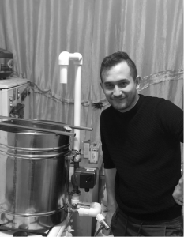
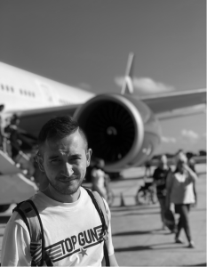
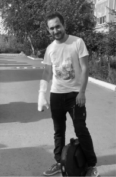
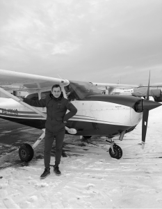
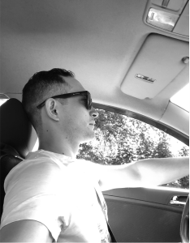

Я ПИВОВАР

Я ПУТИШЕНСТВЕННИК

Я МОНОКОЛЕСТНИК

Я ЛЕТЧИК

Я из маленького города Моршанск, многие из тех кто будет это читать
впервые услышат об этом городе. Мои родители переехали в этот город за
долго до моего рождения. Отец был военный и в те времена особо не
выбирал где служить, как говорят приказы не обсуждают. По этому старт
моей жизни выпал на этот город. И я абсолютно уверен это событие вливает
свой вклад в становление меня мной. Там же родились и мои старшие сестры
и так же прожили детскую часть своей жизни. И да как вы поняли я младший
единственный сын своих родителей, а разница со средней сестрой 12 лет.
Мои сестры считают что я рос очень разбалованным своевольным и
капризным, это взгляд со стороны и он имеет право быть. В свое
оправдание я лишь могу сказать что благодарен родителям что они ни когда
из меня не пытались ни чего лепить и всегда спрашивали что я хочу? кем
хочу быть? и когда у меня что то не получалось то всегда говорили все
получиться. Но это не говорит о том что им было не до меня, они искали
мне занятие, но не в приказной форме а в в виде предложения и
перспективы. Помню как отец меня привел на каратэ, я расплакался и мы
ушли, очень хорошо отложился момент в памяти. Возможно все таки надо
было пойти для поднятия духа и не боязни вступить в конфликт в будущем с
другими людьми, но тогда бы это была бы другая история другого человека.
У нас дома было пианино, осталось от средней сестры, в свое время она
закончила музыкальную школу. что было дальше? Да я начал сам играть и
наверное бесить всех вокруг соседей сверху соседей снизу. По этому
спросили хочу я в музыкальную школу ? хочу. А вот теперь надо подумать.
Если сестра забрала бы пианино к себе домой то пошел бы я в музыкальную
школу? если нет? то я бы ни когда не стал участником местной рок группы,
и не завел бы дружбу со своими нынешними друзьями с которыми до сих
дружба сохранилась, и еще эту цепочку можно продолжать и продолжать пока
не станет страшно от того, что решение забрать пианино, или нет - может
кардинально поменять человека.
В более осознанном возрасте наступила пора выбирать, куда идти учиться. Выбор в Моршанске был не особо жирный, текстильный техникум - да ну вы шо! библиотечный техникум - скучно! ПТУ ? неееет! строительный колледж отделение архитектура! ДА! Помимо музыкальной школы и тяги к музыке у меня была еще одно увлечение это рисунок! их у меня было куча! и это и было моим портфолио для поступления в архитектурный колледж а учитывая недобор то можно было бы и без них обойтись. Учился я очень хорошо но только первый год. а дальше почувствовав свободу и учитывая переходный возраст пошло поехало! Прогулы, прогулы! первые вечеринки! первое пиво! интерес к девушкам! что я вам рассказываю? шаблонная история! Но курсовые все рано ни кто за тебя не сдаст , приходилось по ночам чертить то что люди делали в течении месяца, и это тоже дало мне определенный склад в сознании. Помимо основной учебы и гулянок я находил время пытаться понять 3ds max (программа для 3д моделирования и анимации) как про нее узнал? Пришел в гости к общему знакомому, а тот копался в коде игры generals (компьютерная игра в жанре стратегия) и показал что если тут поменять значение то танк будет стрелять быстрей и ездить тоже а еще можно смоделировать свой танк и добавить на сцену! Это был шок контент ! и желание это понять и сделать самому. По этому я побежал домой устанавливать 3д макс , после чего поковырялся ни чего не понял удалил! Спустя время опять установил попытался удалил, интернета не было! уроков нет. попалась в руки книга по максу и тогда лед тронулся! Я научился делать свои модели 3д и делать визуализацию, что мне пригодилось в дипломном проекте. Больше ни когда я не учился в государственных учебных заведениях, только самообучение!
На фоне того что я знал 3д макс и к тому времени corel draw(программа для создания векторной 2д графики) мое желание было работать в той области где это использовалось Естественно в Моршанске вообще ни чем подобным не пахло! Ехать! Куда? В Москву! Друзья помогли первое время побыть у них в гостях для поиска работы и сквозь боль неопытности я все таки смог устроиться дизайнером 2д графики и это была не высокооплачиваемая работа! но это был тот поезд в который мне удалось запрыгнуть и перемещаться между вагонами в более комфортные и дорогие!
Современный мир, в котором мы живем по настоящему прекрасен и
удивителен. Он наполнен и продолжает наполняться всякими интересными
вещами, гаджетами, средствами передвижения, играми, и еще очень большой
список всего, на что не хватит одной жизни, что бы все попробовать. По
этому, не иметь для себя какое либо хобби в наше время, я считаю это -
преступление против самого себя. Я не осуждаю тех людей, кто кроме
работы ни чем больше не занимаются, это их выбор, возможно их работа это
и есть их хобби, или они озадачены семейной жизнью и просто нет времени
ни что другое, не важно речь не про них... Что нужно что бы найти то чем
ты хотел бы заниматься? Да ничего! просто должен быть интерес! и если он
возникает не надо тянуть и думать а как бы ты это сделал бери и делай!
Я
люблю пиво! И мне было интересно как его производят! Готовые кит наборы
но это детский сад! Пиво должно быть сварено и это очень долгий
интересный почти кулинарный процесс, результат которого зависит от
каждой детали на каждом этапе! Будь то качество солода, либо
правильность белковой паузы! либо ты не надел перчатки и пиво
заразилось! Но хороший результат своей работы ты можешь попробовать на
вкус и понять что это стоило того! и ни какое магазинное пиво не
сравниться с твоим по настоящему вкусным пивом!
Другая темя -
моноколесо. Опять же многие даже не видели его пока и особо не
представляют как вообще можно передвигаться на этом, ты что из цирка!
Нет ребят, я вот рядом с вами, и я еду! со скоростью 40 км/ч и
наслаждаюсь этой вроде как незначительной для автомобилиста скорости, но
это считай максимальная скорость хорошего велосипедиста! И не думайте
раз я не кручу педали то не напрягаюсь Еще как напрягаюсь только другие
мышцы работают, если покататься первый раз и очень долг, это конечно не
возможно потому что без подготовки на него не встать! ну когда встанете
и покатаетесь, то на следующий день у Вас будет болеть все! Но потом
Ваша боль и страдание дадут результат, от которого вы будите кайфовать,
вы за день сможете обойти все места и линия вашего пути будет 50 км а
это больше эмоций от увиденного! Доехать до магазина который в 5 км от
Вас не проблема. Мир вокруг вас станет в два раза ближе.
Помимо всего
остального я очень обожаю езду на машине! и если бы у меня была бы
дополнительная жизнь я бы стал гонщиком! Мне очень нравиться медицина!
бла бы доп жизнь я стал бы хирургом! Летчиком я хотел стать и поступить
в военное училище но не прошел по здоровью, как оказалось потом что это
ошибка врача, но ни капли не жалею, ибо потому что не смог бы выполнять
приказы , такие как сбросить бомбу туда где возможно могут быть женщины
и дети! А летать на самолете возможно и у меня был уже такой опыт! и в
будущем обязательно получу авиационные права и приобрету себе какую
нибудь сесну! По прежнему бывают у меня космические дни когда мне очень
нравиться заниматься музыкой, во основном это весеннее время года, уж не
знаю почему так, но вот так! Пишу треки , учусь петь. обожаю петь, хоть
и голос мне свой не нравиться! Инженерная деятельность! Это просто
искусство. Придумывать механизмы и смотреть как они работают очень
привлекательный процесс. По этому я прикупил себе пару 3Д принтеров и
печатал на них всякие механизмы придуманные мной, но понимая что это
пластик и это игрушка, по этому когда я себе построю дом, будет
мастерская, обязательно будет токарный станок, фрезерный станок,
возможно 5 координатное ЧПУ , и все все что мужской душе для счастья
надо! Продолжу развитие своего Ютуб канала! Соберу авто с нуля
отталкиваясь лишь от эскиза! А далее соберу самолет! А если будет 1000
лайков то соберу космический корабль! шутка если будет 2000 лайков так
сделаю
Но тут особо нечего рассписывать! Просто хочу влюбиться! остальное все я контролирую, а по этому могу управлять
Если тебе понравилась то, что я написал и ты хочешь пообщаться, то подписывайся в инстаграм Erliokos